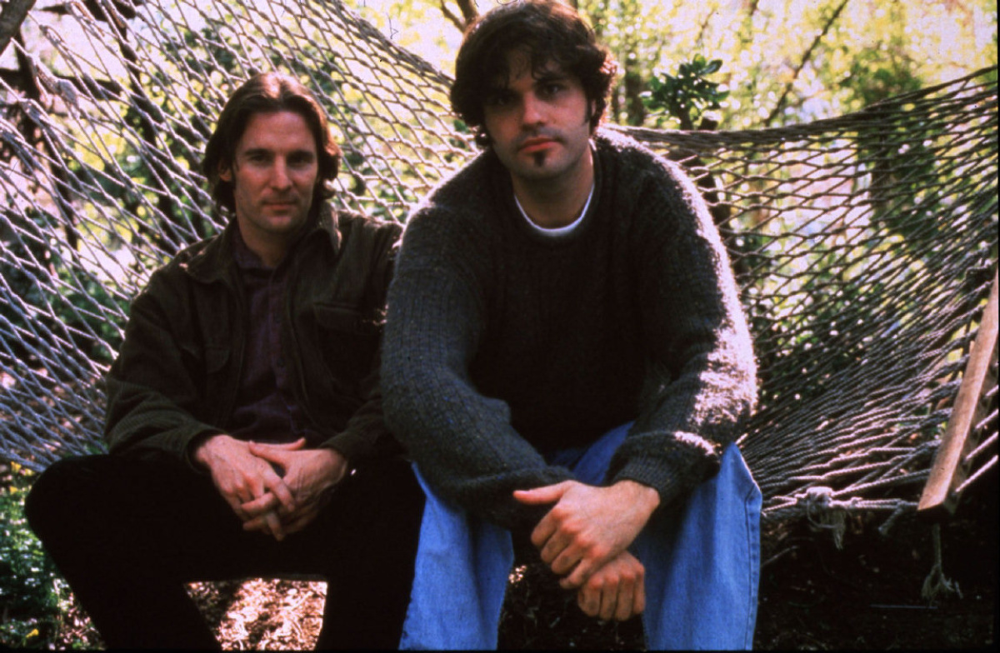

Director: Daniel Myrick and Eduardo Sánchez
Starring: Heather Donahue, Michael Williams, Joshua Leonard
Runtime: 1h 21m
Other indie recommendations:
Paranormal Activity (2007)
Lake Mungo (2008)
Creep (2014)

Production
The movie began filming in 1997 with production budget as low as $20,000 to $750,000 and a shooting period that lasted 8 days. The dialogue was improvised, some of the townsfolk who were “interviewed” for the movie, and the actors’ real names were used in the movie: all were used for maximum authenticity. It was primarily filmed in Seneca Creek State Park, but also in Maryland.
Influence
The Blair Witch Project dethroned Halloween as the most successful independent horror film when it was released. It revived the found-footage craze and garnered many imitators from the late 90s to the mid 2000s. It is also influential as one of the first movies to promote itself with an internet campaign through a clever publicity stunt that passed off the film’s events as real. Some even believed that the actors who starred in the film were truly missing persons. Though the found-footage technique has arguably grown stale, the genre has found new life in the screenlife genre (a filming technique only using screens) and mockumentary genre (a fake documentary). Blair Witch is still known as one of the most influential horror films of all time.
SOURCES:
Pics:
The New York Times, Vice, Toronto Star
Video:
Fandango
Info: https://horror.fandom.com/wiki/The_Blair_Witch_Project_(1999)
 Influence
Influence